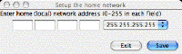
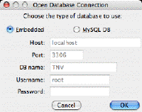
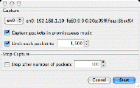

TNV shows remote hosts at the left of the screen and local hosts in a matrix of host rows and time columns at the right with links drawn between them. The matrix cells' colors represent the number of packets for that time interval. Packets can optionally be superimposed on the aggregated local host cells.
| 1. First, a window will prompt you to choose your 'home' or local network; enter the appropriate network address and subnet mask. Hosts that are part of your home network are drawn in the main portion of the display, while remote hosts are drawn much smaller. You can change this later through the Preferences. |  |
| 2. Next, a window will prompt you to choose a database type. If you have a MySQL database setup, choose that option and fill in the host, port, database name, username, and password (the database must already exist), otherwise, choose the default, embedded database. (The default should be appropriate for most users.) |  |
| 3. Next, choose the menu item File -> Import pcap file... to import a file generated with tcpdump, winpcap, ethereal, or other software that can save data in pcap format, or choose Capture -> Capture Packets... to begin capturing packets. (Note: Linux and Mac users must have permission to capture packets.) |  |
| 4. When the file has finished loading or you choose to finish the packet capture, you the visualization will display the network traffic. The amount of memory available to TNV will determine the number of packets that can be visualized at once, but generally anything less than 25,000 will be fine. Up to 60,000 will work, but the user interaction will be sluggish. |
Refer to the Help menu for further information on the use of TNV.